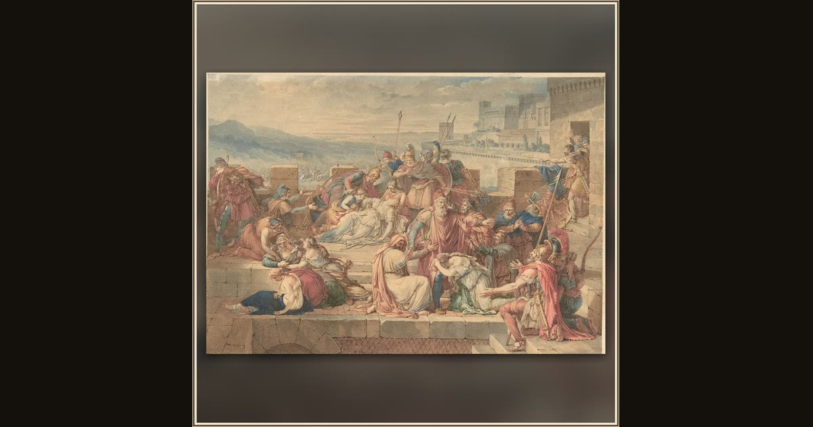

Priam and his Family Mourning the Death of Hector
Etienne Barthélemy Garnier · n.d. · met
On the ramparts of Troy, Priam and the women of his house cry out in grief for Hector, as the whole city breaks into wailing (22.405–411). Explore its place in Homer's Iliad, Book XXII, line 408.